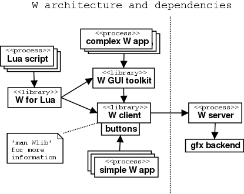
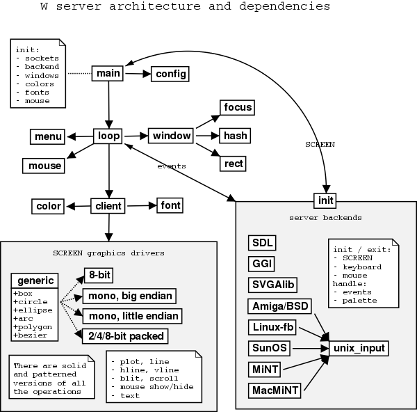

Technical Information about W
One main goal of W is easy graphics programmability. That has been
achieved with sensible default values, easy server connection / window
initialization, and server based window backups. The last one will (on
cost of memory) ease server clipping and lessen the network load.
Contents:
W window system components
W server is composed of the initialization code which handles terminal
and signals, initializes screen, functions accessing it and W server
socket, reads configuration and acts on it. The main loop handles the
windows, redraws and menu, mouse and keyboard events + of course invokes
server functions according to the CLIENT requests.
The graphics drivers are in a library that is linked to the W server
binary. At the startup the OS/HW specific graphics initialization
function, based on the current graphics mode, sets the screen properties
(might also first change into specified graphics mode) into SCREEN
struct and selects which driver functions will be used i.e. returns a
pointer to a suitable SCREEN graphics function pointer table
structure.
Currently there are initialization routines for Linux, (several
different graphics backends) Atari MiNT, SunOS and Amiga NetBSD. Atari
graphics routines are best optimized because W was originally
developed under MiNT. The two-color nature of the W server and backup
bitmaps kind of nullifies arguments for the high/True Color mode
drivers.... The graphics types supported are:
- One bitplane bitmap. Big-endian byte order (packed, MONO
driver). Memory wise this would be the wisest choice as
windows are backed up by the server.
- There's now also a slightly more portable version (BMONO
hack) of the above which works also on x86 but is a bit
slower. As W requires linear memory, VGA architecture
limits you to 640x480x2 resolution.
- Interleaved bitmaps, of which only two bitplanes are used.
Big-endian byte order (packed, COLORMONO driver). This is
faster than the COLOR driver (on graphics devices where
bitplanes are on separate bitmaps, monochrome driver could
be used instead if processor allows long accesses on word
boundaries).
- Interleaved bitmaps with palette. A special array is used
to determine which plane(s) need to be set for the
back/foreground colors. Big endian byte order. (packed,
COLOR driver).
- 8-bit, chunky bitmap with palette (DIRECT8 color driver).
Interleaved bitplanes (an Atari format) contain the first 16 pixels on
first bitplane, then the same pixels on next bitplane and so on until
the next 16 pixels on the first bitplane, then same pixels on the next
bitplane etc.
All of the drivers need graphics memory to be linearly accessible. On
older x86 PCs graphics cards use paged memory. Didn't make one feel
like supporting them :).
Screen memory
Under MiNT the screen memory block address is acquired by XBios call for
the logical screen address. On unix machines the frame buffer device is
mmap()'ed to memory or some additional library is used for acquiring a
'screen'. Then the graphics functions just write to the returned bitmap
address.
W library takes care of marshaling (packaging arguments into structs
before sending them over network for unmarshalling) function calls,
buffering the graphics requests, and some utility functions. Besides
socket buffering, a lot of the W library code has gone / will go to the
routines that deal with w_get/putblock() functions as W server might be
in a different graphics mode from the one used by the client bitmaps and
therefore numerous conversion and alignment routines are needed. Other
utilities include a simple button gadget implementation and reading/writing
of images.
Kay Römer has created a W toolkit that is similar to the X toolkit.
With it user can create user interface component hierarchies in an
object-oriented manner. The user interface components are called
'widgets'. A widget can be a simple (referring to hierarchy, not code
size) one like scrollbar, button or fileselector or it can be a
container like shell (W window), viewport (scrollable area) or
pane (arranges child widgets horizontally or vertically).
User can attach callback functions to widgets which will be invoked
when a certain widget specific action is performed (for example button
widget is clicked). There can also be timer and file event callbacks.
After user has created the widget hierarchy/ies and put it/them onto the
screen he gives the application control over to the toolkit which will
then call the user functions as needed. This way handling the user
input is easier and more consistent. Extending and changing the user
interface will also be much easier as there are lots of ready made
interface components already available. Even complex ones like
fileselector, HTML and terminal widgets.
As there isn't (yet) a Wt user interface builder, the widget hierarchies
have to be built 'by hand' and tested by compiling the code. After some
experimenting with the toolkit this shouldn't be much of a hindrance as
long as one keeps the widget manuals (listing the widget options) at
hand. :-)

Wt, W GUI toolkit
- Layout and draw the widgets onto container windows.
- Check for incoming W and file events and timeouts.
- Call the widget's handler for that event.
...Calls Wlib function(s)...
Wlib, W client library
- Function argument validity is tested.
- graphics request packet is composed.
- packet is copied to the socket buffer.
... when buffer fills up or user requests an event, buffer contents are
'bulk'-sent to ...
W server

W window system size
W1R4 code size is about (as reported by wc):
lines KB
------------------------------------
W server 23000 550
W library 7000 160
W2X library 3000 70
W toolkit 23000 470
------------------------------------
56000 1250
W applications 7000 170
Wt applications 14000 300
W games 12000 300
Wt games 15000 380
W/Wt demos 4000 80
------------------------------------
108000 2480
About half of the W server code is for the low level graphics routines
needed with different screen formats in the W server.
oak@welho.com